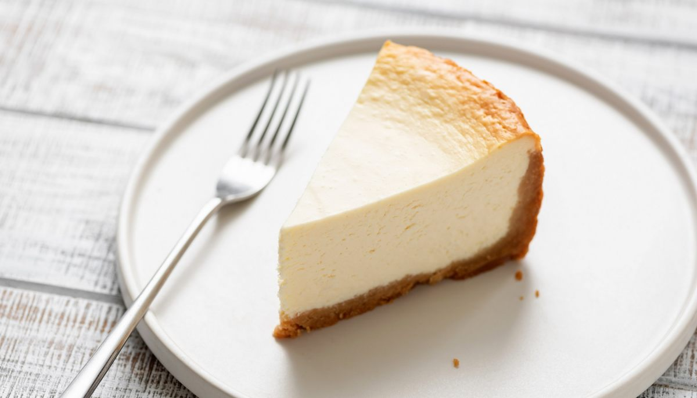

Cheese Cake
"Voici la recette du Cheesecake classique New-Yorkais"

| Difficulté | Préparation | Cuisson | Temps Total |
|---|---|---|---|
| Assez Facile | 20 min | 1 h 10 min | 1 h 30 min |
Liste des ingrédients
200 g de spéculos moulus
50 g de beurre fondu
600 g de fromage frais
1 citron non traités
3 oeufs
25 g de farine ou maïzena
100 g de crème fraîche épaisse
20 cl de lait
150 g de sucre
Etapes de la recette
1 | Mélangez la poudre de spéculoos avec le beurre fondu, étalez au fond d'un moule à bords amovibles, tassez, et passez 10 minutes au four à 180°C |
2 | Battez le fromage frais quelques secondes, ajoutez la crème fraîche, battez, ajoutez le zeste de citron, le sucre, les oeufs 1 par un |
3 | Ajoutez la farine tamisée puis enfin le lait |
4 | Versez par dessus la base de gâteau au spéculoos |
5 | Faites chauffer le four à 210°C, enfournez le cheesecake pour 10 minutes, puis baissez le four à 90°C pendant 1 heure |
6 | Laissez le cheesecake encore 1 heure dans le four éteint, puis après l'avoir laissé tiédir, placez-le au frais jusqu'au lendemain. |